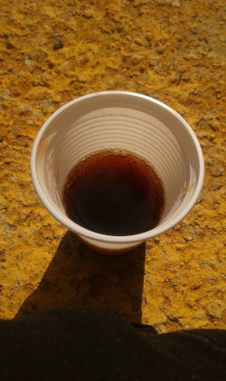
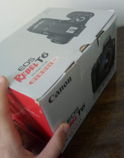

Desde pequeno, sempre me interessei por fotografia, mesmo sem compreender os conceitos básicos de câmeras e edição. Com um celular antigo da Samsung, eu apenas apontava para objetos e os fotografava. Por exemplo, capturava imagens de um copo descartável com coca-cola, explorando ângulos diferentes na calçada em frente à casa do meu padrasto, especialmente no final da tarde.
Mais tarde, meu irmão adquiriu uma Nikon Coolpix L820. Em determinado momento, ele abandonou a câmera no meio de suas roupas sujas no quarto. Aproveitando a oportunidade, peguei a câmera e disse a ele: 'Victor, sua câmera está no meio da bagunça e pode estragar ficando aí. Posso usar?' Ele concordou. Ao utilizar a Nikon, tirei fotos para lá e para cá, fazendo um bom uso da câmera.
No ano de 2018, percebi a oportunidade de adquirir minha primeira câmera semiprofissional, uma Canon T6. Minha paixão por fotografia cresceu significativamente naquele momento. Depois de 3 anos assistindo a vários vídeos sobre a câmera, aos poucos comecei a aprender como utilizá-la. Percebi que precisava de mais conhecimento sobre fotografia e, por fim, encontrei um curso básico de fotografia que ficava no bairro Batel, em Curitiba.
Rodapé do Site